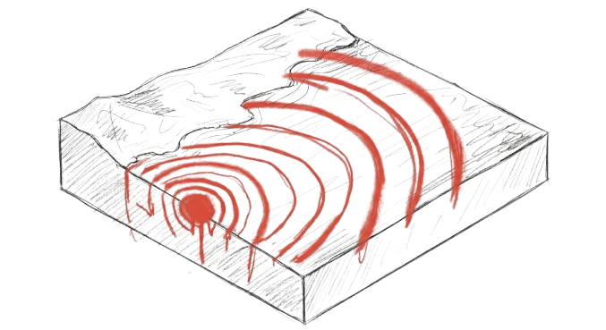
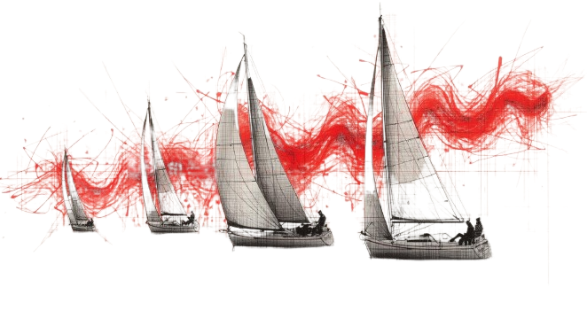
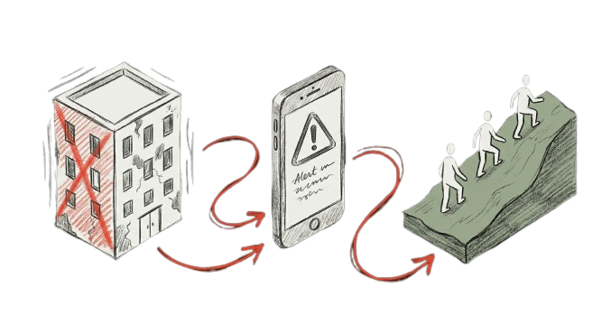
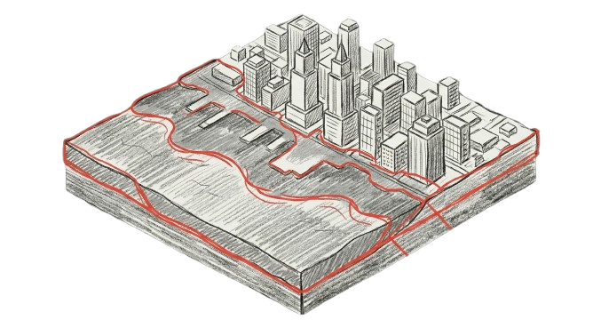
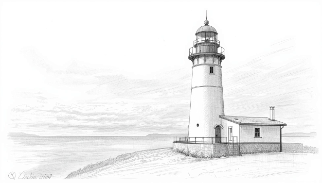
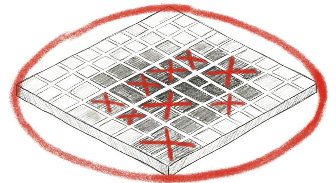

2011年3月11日。東日本大震災の津波は、約19,000人の命を奪った。 March 11, 2011. The tsunami of the Great East Japan Earthquake claimed approximately 19,000 lives. 2011年3月11日，东日本大震灾海啸夺走了约19,000人的生命。 2011년 3월 11일. 동일본대지진의 쓰나미는 약 19,000명의 목숨을 앗아갔다. El 11 de marzo de 2011, el tsunami del Gran Terremoto del Este de Japón se cobró aproximadamente 19,000 vidas. Le 11 mars 2011, le tsunami du Grand Séisme de l’Est du Japon a coûté la vie à environ 19 000 personnes.
混雑した避難路。「まだ大丈夫だろう」という正常性バイアス。動けない高齢者を連れて走る家族。 Congested evacuation routes. The normalization bias of “it will be fine.” Families running while supporting elderly relatives who cannot move. 拥堵的避难通道。"应该没事吧"的正常化偏差。牵着无法行动的老人奔跑的家庭。 혼잡한 대피로. "아직 괜찮겠지"라는 정상성 편향. 거동하지 못하는 노인을 데리고 뛰는 가족. Rutas de evacuación congestionadas. El sesgo de normalización: "todo irá bien." Familias corriendo con ancianos que no pueden moverse. Voies d’évacuation encombrées. Le biais de normalisation : "tout ira bien." Des familles courant avec des proches âgés incapables de se déplacer.
これらは全て、シミュレートできる。 All of this can be simulated. 这一切，都可以被模拟。 이 모든 것은, 시뮬레이션할 수 있다. Todo esto se puede simular. Tout cela peut être simulé.
鎌倉は特殊な都市だ。三方を山に囲まれ、狭い古道が大規模避難の致命的ボトルネックとなる。 Kamakura is a unique city — surrounded by mountains on three sides, its narrow ancient passes become the fatal bottleneck of any mass evacuation. 镰仓是一座特殊的城市。三面环山，狭窄的古道成为大规模疏散的致命瓶颈。 가마쿠라는 특수한 도시다. 삼면이 산으로 둘러싸여 있어, 좁은 옛길이 대규모 대피의 치명적 병목이 된다. Kamakura es una ciudad única, rodeada de montañas por tres lados. Sus estrechos pasos ancestrales se convierten en el cuello de botella fatal de cualquier evacuación masiva. Kamakura est une ville unique, entourée de montagnes sur trois côtés. Ses étroits passages ancestraux deviennent le goulot d’étranglement fatal de toute évacuation massive.
観光客の多くは地元の避難路を知らない。
彼らが89,000人の中に混在したとき、何が起きるのか。
Most tourists don’t know local evacuation routes. When they’re mixed into those 89,000 — what happens?
大多数游客不了解当地的疏散路线。当他们混入89,000人之中——会发生什么？
대부분의 관광객은 지역 대피로를 모른다. 그들이 89,000명 속에 섞였을 때, 무슨 일이 일어날까?
La mayoría de los turistas no conocen las rutas de evacuación locales. Cuando se mezclan entre esas 89,000 personas — ¿qué ocurre?
La plupart des touristes ne connaissent pas les voies d’évacuation locales. Quand ils se mêlent à ces 89 000 personnes — que se passe-t-il ?
だから、私はこの物理と心理の演算空間を作った。 So I built this computational space of physics and psychology. 因此，我构建了这个物理与心理的计算空间。 그래서 나는 이 물리와 심리의 연산 공간을 만들었다. Por eso construí este espacio computacional de física y psicología. C’est pourquoi j’ai créé cet espace computationnel de physique et de psychologie.
数万人の「周囲状況把握」と「経路選択」を、複数スレッドで同時並行処理。設定管理から計算実行、画面描画を分離した高い拡張性。Multi-threaded simultaneous processing of "situational awareness" and "route selection" for tens of thousands. High scalability via separated config, computation, and rendering.数万人的"状况感知"与"路径选择"通过多线程同时并行处理。将配置管理、计算执行和画面渲染分离，实现高度可扩展性。수만 명의 "주변 상황 파악"과 "경로 선택"을 복수 스레드로 동시 병렬 처리. 설정 관리, 계산 실행, 화면 렌더링을 분리하여 높은 확장성 실현.Procesamiento multihilo simultáneo de "percepción situacional" y "selección de rutas" para decenas de miles. Alta escalabilidad separando configuración, cálculo y renderizado.Traitement multi-thread simultané de la "conscience situationnelle" et de la "sélection de routes" pour des dizaines de milliers d'agents.
道路の面積に対して人が集中しすぎると限界密度に達し、完全に停止するデッドロック現象を数理的に再現。When crowd density exceeds the critical threshold for road area, movement halts completely. Mathematical reproduction of the deadlock phenomenon.当道路面积上的人群密度超过极限时，达到完全停止的死锁现象，以数理方式再现。도로 면적에 비해 사람이 과도하게 집중되면 한계 밀도에 달해 완전히 멈추는 데드락 현상을 수리적으로 재현.Cuando la densidad supera el umbral crítico, el movimiento cesa. Reproducción matemática del fenómeno de deadlock.Quand la densité dépasse le seuil critique, le mouvement s'arrête totalement. Reproduction mathématique du phénomène de deadlock.
視野内の多数の人間が走っていると、安全な避難路を捨て、無意識に「既に混雑している破滅的ルート」へ引き込まれる挙動を計算。When the majority in sight are running, agents abandon safe routes and are unconsciously drawn toward already-congested, catastrophic paths.当视野内大多数人开始奔跑，个体便会抛弃安全的避难路，被无意识地引向"已经拥挤的灾难性路线"。시야 내 대다수가 뛰고 있으면, 안전한 대피로를 버리고 무의식적으로 "이미 혼잡한 파국적 루트"로 끌려드는 행동을 계산.Cuando la mayoría visible corre, los agentes abandonan rutas seguras y son atraídos inconscientemente a rutas catastróficas ya congestionadas.Quand la majorité visible court, les agents abandonnent les routes sûres et sont attirés inconsciemment vers des routes déjà encombrées.

急な上り坂では速度が物理的に落ち、緩やかな下り坂では最速で移動できるという重力空間の数学的補正。Mathematical correction for gravity: speed drops physically on steep ascents; gradual descents allow maximum movement speed.陡坡上速度会物理性下降，缓下坡则移动最快——重力空间的数学补正。가파른 오르막에서는 속도가 물리적으로 떨어지고, 완만한 내리막에서는 최고 속도로 이동하는 중력 공간의 수학적 보정.Corrección matemática de la gravedad: la velocidad cae en subidas pronunciadas, los descensos suaves permiten velocidad máxima.Correction mathématique de la gravité : la vitesse diminue dans les montées prononcées, les descentes douces permettent la vitesse maximale.
プロジェクト始動。
計算機の中の鎌倉の誕生。Project launch.
Kamakura born inside a computer.项目启动。
计算机中的镰仓诞生。프로젝트 시작.
컴퓨터 속 가마쿠라 탄생.Inicio del proyecto.
Nace Kamakura en un ordenador.Lancement du projet.
Kamakura naît dans un ordinateur.

89,000人の
マルチエージェント化成功。89,000-agent
simulation achieved.89,000人
多智能体化成功。89,000명의
멀티에이전트화 성공.Simulación de
89,000 agentes lograda.Simulation de
89 000 agents réussie.

同調行動（Herd Behavior）
モデルの高度化。Advanced
Herd Behavior modeling.从众行为（Herd Behavior）
模型高度化。동조 행동(Herd Behavior)
모델 고도화.Modelado avanzado
del Comportamiento de Manada.Modélisation avancée
du Comportement de Meute.

本ポータルサイト公開。Portal site launched.本门户网站正式上线。포털 사이트 공개.Lanzamiento del portal.Lancement du portail.
